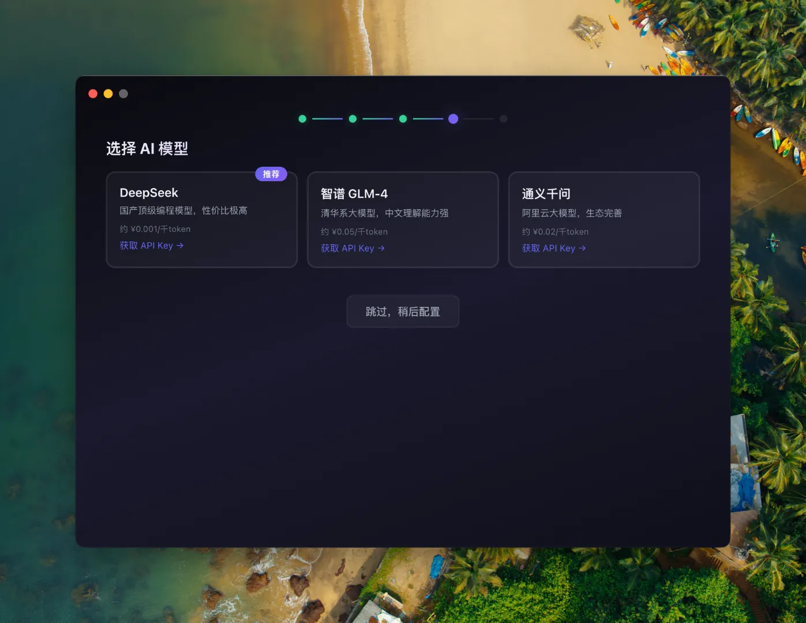

先确认缺什么。
Node.js、Git、Claude Code 和 CC-Switch 状态会集中展示，新手不用自己判断。
为什么它更适合新手
不要求用户先理解终端、npm 或 PATH。按窗口提示完成安装，适合不会命令行的新手用户。
README 已提供 Windows 安装包与 macOS DMG，同时保留脚本安装方式，给进阶用户继续使用。
安装流程使用淘宝 NPM、清华镜像和 GitHub 代理镜像，降低网络环境带来的失败率。
软件截图
用户能看到当前系统环境、需要安装的组件，以及后续模型选择和完成后的启动指引。
Node.js、Git、Claude Code 和 CC-Switch 状态会集中展示，新手不用自己判断。

DeepSeek、智谱 GLM-4、通义千问等选项放在同一流程里，降低后续配置门槛。
完成后给出打开终端、运行 claude 和启动 CC-Switch 的入口，避免装完后不知道怎么用。
Before
After
安装器会做什么
目标不是重新发明 Claude Code，而是让中国大陆用户先顺利装上、能打开、能接入可用模型。
国产顶级编程模型，README 中标注为推荐选择。
清华系模型，适合需要中文理解能力的用户。
通过 DashScope API Key 接入，生态完善。
Download
根据你的电脑选择对应版本。Mac 用户如果不确定芯片，先在“关于本机”里查看是 Apple 芯片还是 Intel 芯片。
README 说明：macOS 版本暂未签名，首次打开可能需要右键选择“打开”；Windows 首次运行可能出现 SmartScreen 提示。
如果双击打开提示“已损坏，无法打开”，请在终端执行以下命令解锁：
sudo xattr -r -d com.apple.quarantine /Applications/Claude\ Code\ 安装助手.app
Contact
我会把 GitHub 下载、国内镜像配置、macOS 打开权限和模型切换相关的更新说明，放在公众号里同步。
FAQ
README 建议关闭当前终端，重新打开一个新终端窗口后再试。如果仍然不行，再检查全局安装是否成功。
通常是当前模型 API 配置有问题。可以打开 CC-Switch 检查 API Key，或切换到其他模型。
这是 macOS 对未签名应用的隔离提示。确认安装包来源后，在终端执行下面命令解除隔离，再重新打开应用。
sudo xattr -r -d com.apple.quarantine /Applications/Claude\ Code\ 安装助手.app
可以。这个项目同时提供可视化安装器和脚本安装。新手优先下载 Windows 安装包或 macOS DMG。
CC-Switch 用来管理和切换模型。安装完成后，可以用 DeepSeek、智谱 GLM、通义千问等模型驱动 Claude Code。